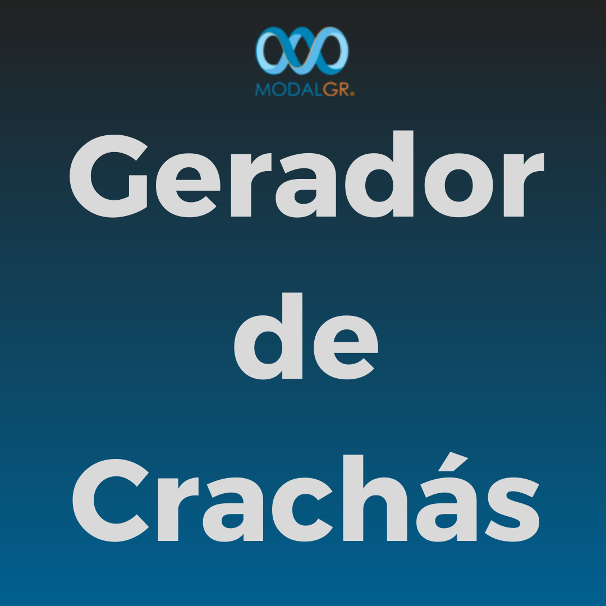
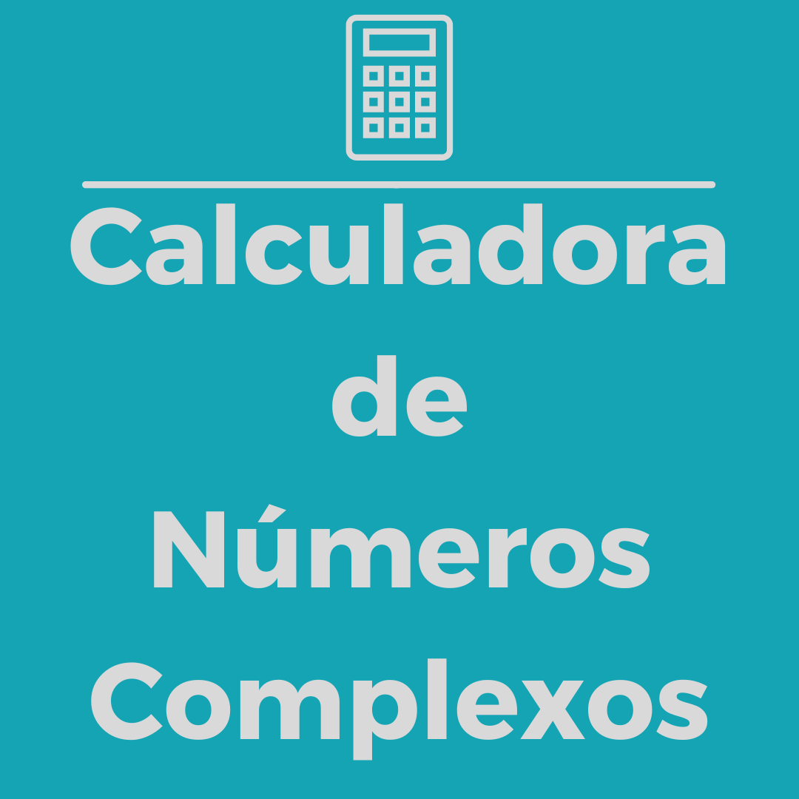
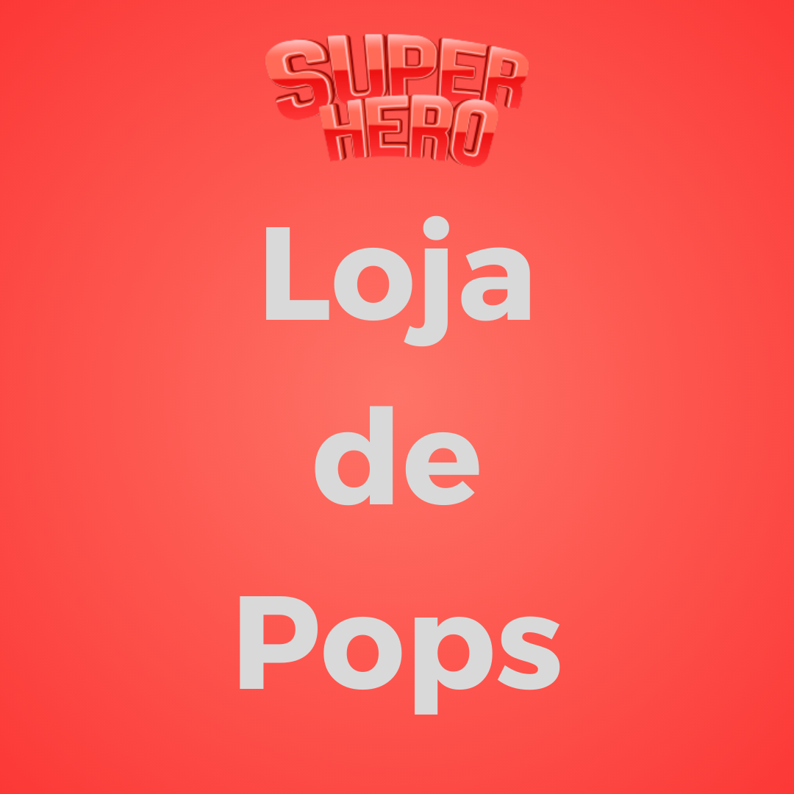

Projetos
-
Tecnologias utilizadas: ReactJs, NodeJs, MongoDb, Prisma
Descrição: Essa aplicação é completa e pode guardar as suas tarefas do dia a dia, experimente! -
Tecnologias utilizadas: React, NodeJs
Descrição: Esse projeto é a nível de Trabalho de Conclusão de Curso, e ainda está em andamento, ele será integrado com um hardware, as informações contidas nele ainda são simuladas. -
Tecnologias utilizadas: ReactJs, Styled-Components, React-Router-Dom, Axios e Redux.
Descrição: Utilizando uma API Open-source de filmes, o objetivo do projeto é exibir na tela os filmes mais populares do momento. -

Tecnologias utilizadas: HTML, CSS, JavaScript.
Descrição: Essa aplicação foi exercício de um processo seletivo, e atendendo a suposta necessidade da empresa, foi criado um gerador de crachás para seus colaboradores. -

Tecnologias utilizadas: HTML, CSS, JavaScript.
Descrição: Projeto universitário, uma calculadora de conversão de números polares e retangulares, ótima para circuitos em corrente alternada. -
Tecnologias utilizadas: NodeJs, MongoDb, Express, Prisma, JsonWebToken, Bcrypt.
VER PROJETO
Descrição: Criação de uma api conectada a um database MongoDB através do prisma, essa api está em produção e será usada para implementar um projeto full stack. -

Tecnologias utilizadas: HTML, CSS, JavaScript.
Descrição: Utilizando DOM e localStorage, foi criado uma lista de tarefas com filtros aplicáveis para controle de afazeres. Esse projeto utiliza login com criptografia simples. -

Tecnologias utilizadas: HTML, CSS.
Descrição: A loja foi possui 3 páginas, elaboradas com o objetivo de serem responsivas e integrarem a melhor UX para o usuário, tanto aquele que utiliza navegador web quanto o que utiliza o mobile.
Por favor escolha uma das opções abaixo: